Фундамент дизайна
Базовые принципы дизайна
У веб-дизайна, также как и у любого другого вида искусства, есть свои правила и принципы. Дизайнеры следуют принципам дизайна для того, чтобы правильно оформить свою композицию(веб-сайт, лендинг, баннер).
Всего ключевых принцепов дизайна 8: единство, баланс, акцент, ритм, контраст, пропорции, пространство, иерархия. Разберём каждый из них.
Единство
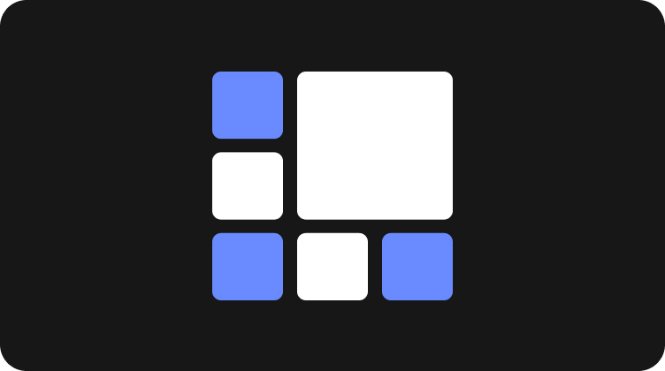
Этот принцип подразумевает, что все элементы дизайна должны быть согласованы и работать вместе для создания целостной картины. Единство создает понимание, что мы находимся в пределах одного и того же сайта, на какую бы страницу не перешли.
Зачем нужно единство в дизайне сайта
1. Улучшает восприятие. Когда все элементы сайта (цвета, шрифты, графика, навигация) гармонируют друг с другом, пользователю легче воспринимать и взаимодействовать с сайтом.
2. Усиливает бренд. Единый стиль помогает сформировать запоминающийся образ бренда и усилить его узнаваемость.
3. Повышает профессионализм. Сайт с продуманным единым дизайном выглядит более профессионально и вызывает доверие у посетителей.
Как достичь единства в дизайне сайта
1. Выбрать последовательную цветовую палитру. Используй ограниченный набор основных и дополнительных цветов.
2. Применять согласованные шрифты. Ограничьcя 2-3 шрифтами, подходящими для вашего бренда.
3. Создать единую графику. Используй единый стиль иллюстраций, иконок и других визуальных элементов.
4. Разработать последовательную навигацию. Обеспечь логичную структуру меню и сквозную систему навигации по сайту.
5. Соблюдать пропорции и сетки. Выдерживай единые принципы верстки и размещения объектов.
Пример
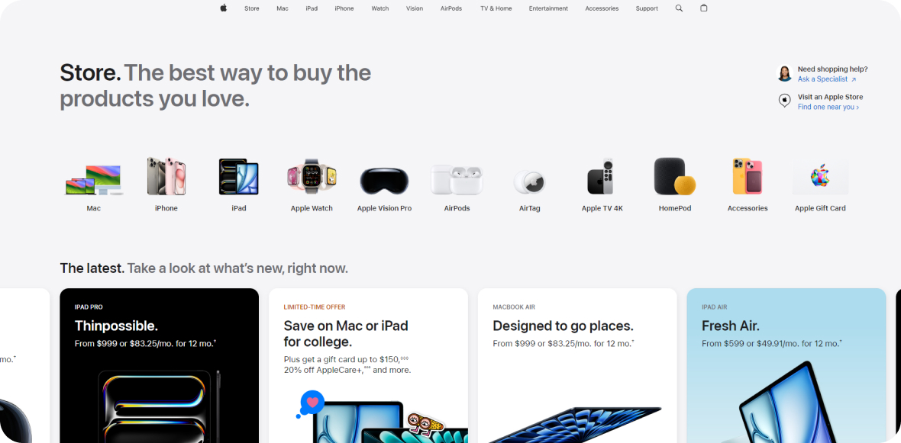
Скриншот сайта Apple
Сайт Apple, где все элементы - цвета, шрифты, графика - создают цельный и узнаваемый визуальный стиль.
Баланс
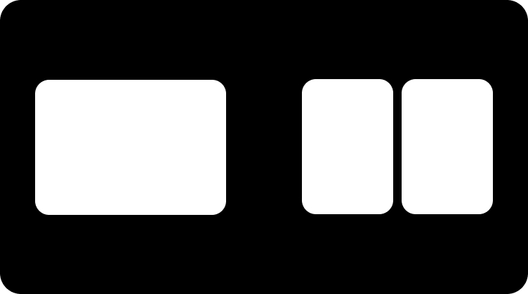
Визуальный баланс — это способ создания равновесия между элементами дизайна. Если композиция сбалансирована, изображение не вызывает зрительного дискомфорта.
Зачем нужен баланс в дизайне сайта
1. Улучшает восприятие. Сбалансированное расположение объектов помогает пользователю легче воспринимать и ориентироваться на странице.
2. Повышает удобство. Сбалансированный дизайн создает ощущение комфорта и организованности, что положительно влияет на взаимодействие с сайтом.
3. Подчеркивает важное. Правильный баланс позволяет выделить ключевые элементы и акцентировать на них внимание.
Как достичь баланса в дизайне сайта
1. Распределяй элементы равномерно по странице.
2. Используй симметрию или асимметрию, в зависимости от желаемого эффекта.
3. Соблюдай пропорции между крупными и мелкими объектами.
4. Создавайте визуальные "весовые" акценты для баланса.
5. Экспериментируйте с различными схемами размещения.
Пример
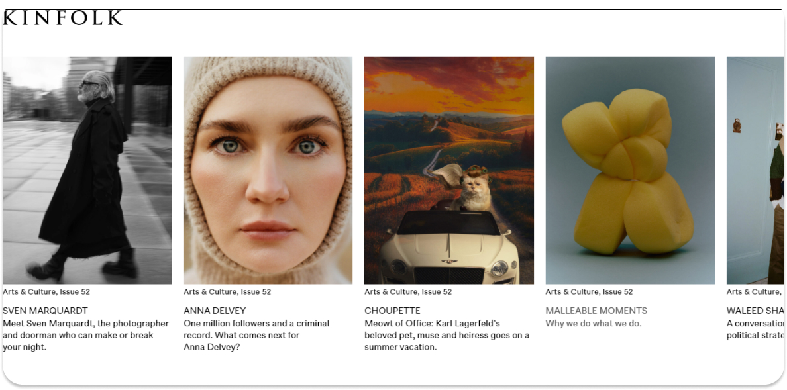
Скриншот страницы онлайн-журнала Kinfolk
Страница онлайн-журнала Kinfolk, где симметричное расположение текста и фотографий формирует уравновешенную композицию.
Акцент (контраст)
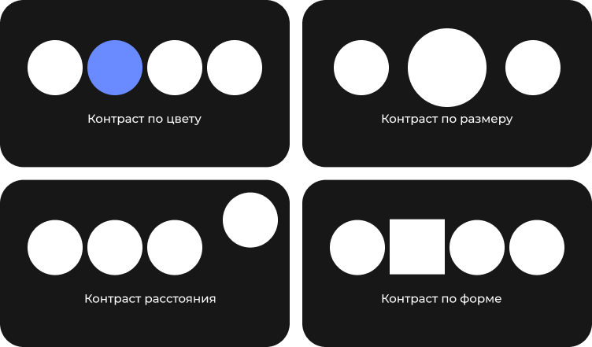
Акцент — это способ выделить элемент, подчеркнуть его важность и значимость, сфокусировать взгляд.
Зачем нужен акцент в дизайне сайта
1. Фокусирует внимание. Правильно расставленные визуальные акценты помогают пользователю быстро находить ключевую информацию.
2. Улучшает восприятие. Акцентирование важных деталей упрощает понимание структуры и навигации по сайту.
3. Повышает конверсию. Выделение "точек входа" (призывов к действию, форм, продуктов) увеличивает вероятность совершения целевых действий.
Как создать акценты на сайте
1. Размер. Увеличивай размер элементов, которые хотите выделить - заголовки, кнопки, изображения.
2. Цвет. Используй яркие, контрастные цвета, чтобы они привлекали внимание.
3. Форма. Нестандартные, необычные формы также помогают акцентировать объекты.
4. Расположение. Располагай ключевые элементы в "сильных" местах страницы - верхняя часть, центр, места "взгляда".
5. Пустое пространство. Окружай важные объекты достаточным свободным пространством, чтобы они выделялись.
6. Движение. Анимированные, динамичные элементы привлекают взгляд пользователя.
Пример
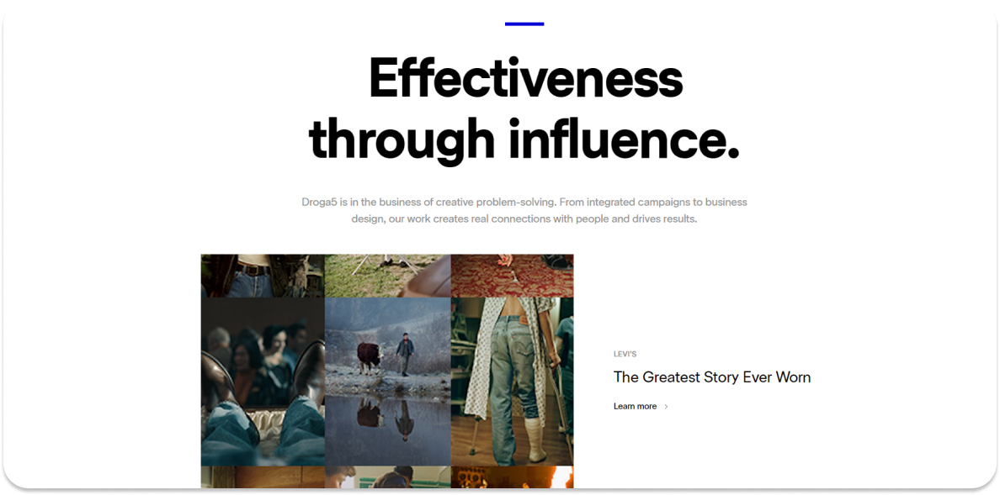
Скриншот страницы агентства Droga5
Дизайн страницы агентства Droga5, где крупное фоновое изображение служит визуальным центром притяжения.
Ритм
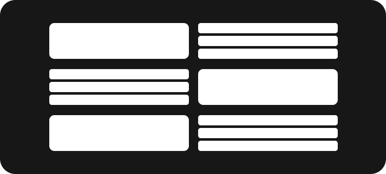
Ритм — это повторение.
Зачем нужен ритм в дизайне сайта
1. Улучшает восприятие. Ритмичное расположение элементов помогает пользователю легче воспринимать и ориентироваться на странице.
2. Усиливает целостность. Повторяющиеся паттерны связывают отдельные части сайта в единое гармоничное целое.
3. Создаёт настроение. Разные ритмические схемы могут вызывать у пользователя различные эмоции - от спокойствия до динамичности.
Как создать ритм на сайте
1. Используй повторяющиеся модули - сетки, блоки, иконки, шрифты.
2. Экспериментируй с расстояниями, размерами и положением элементов.
3. Чередуй крупные и мелкие объекты, создавая ритмические акценты.
4. Добавляй динамические элементы (анимацию, видео) для усиления ритма.
5. Соблюдай баланс между упорядоченностью и разнообразием.
Пример
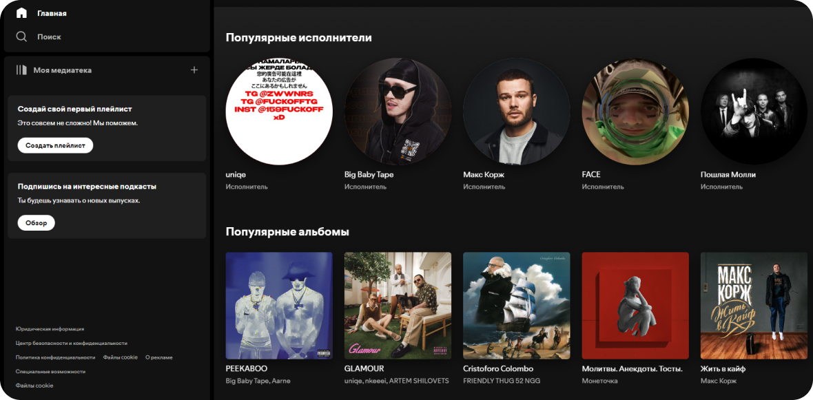
Скриншот сайта Spotify
Дизайн интерфейса приложения Spotify, где повторяющиеся музыкальные обложки создают динамичный ритмический рисунок.
Пропорции
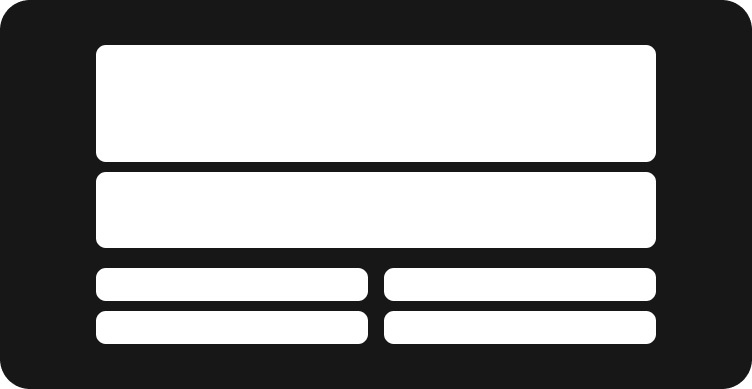
Пропорции — соотношение размеров и масштаба элементов друг к другу.
Зачем нужны пропорции в дизайне сайта
1. Улучшает восприятие. Правильные пропорции создают ощущение гармоничности и целостности, делают интерфейс более понятным.
2. Повышают удобство. Соразмерность элементов обеспечивает комфортное взаимодействие пользователя с сайтом.
3. Усиливают визуальную привлекательность. Красивые, сбалансированные пропорции придают дизайну изящество и элегантность.
Как применять пропорции на сайте
1. Выстраивай сетки и модульные системы с продуманными соотношениями.
2. Используй пропорции "Золотого сечения" при размещении ключевых элементов.
3. Создавай визуальный баланс между крупными и мелкими объектами.
4. Экспериментируй с асимметричными соотношениями для большей динамики.
5. Соблюдай единый масштаб и пропорции в рамках всего сайта.
Пример
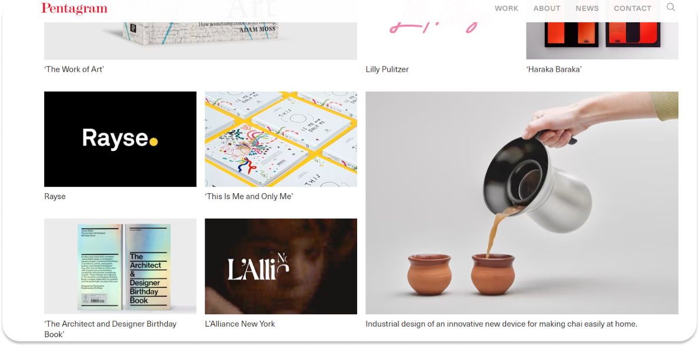
Скриншот сайта студии дизайна Pentagram
Сайт студии дизайна Pentagram, где соотношения размеров блоков, текста и изображений выстроены по принципу "золотого сечения".
Иерархия
Иерархия — организация элементов по степени их важности и визуальной значимости.
Зачем нужны иерархия в дизайне сайта
1. Фокусирует внимание. Иерархия помогает выделить и акцентировать ключевые элементы, на которые должен обращать внимание пользователь.
2. Улучшает навигацию. Четкая структура и приоритеты облегчают пользователям поиск нужной информации на сайте.
3. Повышает эффективность. Выделение наиболее важных объектов увеличивает вероятность совершения целевых действий.
Как создать иерархию на сайте
1. Размер. Делай лючевые элементы крупнее, второстепенные - мельче.
2. Расположение. размещай наиболее важные объекты в "сильных" местах страницы - вверху, в центре.
3. Контраст. Используй контрастные цвета, шрифта и фоны, чтобы привлечь внимание.
4. Пустое пространство. Окружай важные элементы достаточным пространством, чтобы подчеркнуть их значимость.
5. Групповое размещение. Объединяйте связанные элементы в логичные блоки для упрощения восприятия информации.
Пример

Скриншот сайта New York Times
Главная страница New York Times, где размер, расположение и контраст текстовых и визуальных элементов позволяют выделить наиболее важную информацию.
Свободное пространство
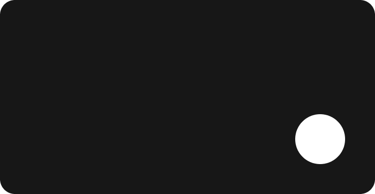
Свободное пространство — область между элементами сайта, которая не заполнена контентом.
Зачем нужно свободное пространство на сайта
1. Улучшает читаемость. Достаточные пробелы между элементами делают контент более чётким и понятным.
2. Усиливает фокус. Свободное пространство вокруг ключевых объектов акцентирует на них внимание пользователя.
3. Повышает удобство. Грамотное использование пустого пространства упрощает навигацию и взаимодействие с сайтом.
4. Создаёт ощущение лёгкости. Правильный баланс заполненных и пустых зон формирует визуально приятное восприятие.
Как создать свободное пространство на сайте
1. Обеспечивайте достаточные отступы между блоками, изображениями, текстовыми элементами.
2. Выделяйте ключевые объекты (призывы к действию, заголовки) достаточным пространством вокруг.
3. Выделяйте ключевые объекты (призывы к действию, заголовки) достаточным пространством вокруг.
4. Экспериментируйте с балансом заполненных и пустых зон для достижения гармоничного визуального восприятия.
Пример
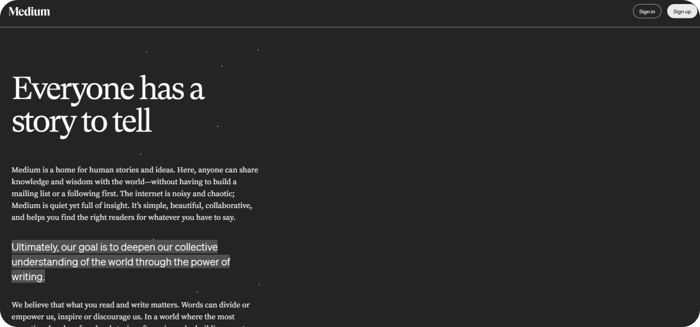
Скриншот сайта Medium
Сайт Medium, где акцент сделан на тексте и его удобочитаемости благодаря значительному количеству свободного пространства.
Итоги
Баланс
Баланс относится к распределению визуальной нагрузки элементов на странице, что создает ощущение стабильности.
Как применять
Используй симметричный баланс (равномерное распределение элементов) для равномерного распределения элементов, он создаст формальный и упорядоченный вид. Если ты хочешь добавить динамики и современности, примени асимметричный баланс (разное распределение, но все равно сбалансированное).
Единство
Единство обозначает целостность дизайна, когда все элементы успешно сочетаются и работают вместе, создавая единое целое.
Как применять
Используй последовательную цветовую палитру, шрифты и стили для создания гармоничного восприятия информации. Например, одинаковые стили кнопок и заголовков на сайте улучшат общий визуальный опыт пользователей.
Акцент (контраст)
Акцент используется для выделения ключевых элементов и привлечения внимания пользователя.
Как применять
Используй цвет, размер и размещение, чтобы выделить важные элементы, такие как кнопки призыва к действию. Это поможет пользователю сосредоточиться на ключевой информации.
Ритм
Ритм — это повторение и чередование элементов, создающее визуальное течение и динамику.
Как применять
Используй повторяющиеся элементы, такие как один стиль типографики и цветовую палитру. Например, выбирай одинаковый шрифт для заголовков и основного текста, а также используйте одни и те же цвета для кнопок и ссылок. Это улучшит восприятие контента и поможет пользователям легче ориентироваться на странице.
Пропорции
Пропорция описывает соотношение между размерами элементов, что влияет на их визуальную гармонию.
Как применять
Используй сетки для структуры, пропорциональные размеры шрифтов для иерархии и равномерные отступы для баланса. Масштабируй изображения корректно и обеспечивай адаптивный дизайн для лучшего восприятия.
Иерархия
Иерархия обозначает порядок и важность информации в дизайне, позволяя пользователям легко навигировать по контенту.
Как применять
Иерархию можно создать, меняя размеры заголовков и шрифтов, чтобы выделить важные части текста. Используй разные цвета, чтобы привлечь внимание к ключевой информации. Распределяй элементы на странице и оставляйте отступы между ними, чтобы сделать структуру более ясной.
Свободное пространство
Свободное пространство (или негативное пространство) — это пустые области в дизайне, которые помогают разделять и группировать визуальные элементы.
Как применять
Используй свободное пространство для улучшения читабельности текста и выделения ключевых элементов. Оставляй отступы между секциями и элементами, чтобы избежать загромождения. Пространство помогает направить внимание пользователей и создаёт ощущение чистоты и упорядоченности на странице.
Примеры заданий для практики
Дизайн лендинга
Создай макет лендинговой страницы для вымышленного продукта или услуги. Примени иерархию для выделения заголовка, краткого описания и призыва к действию (CTA). Обеспечь баланс между изображениями и текстом. Используй пространство, чтобы сделать страницы чистыми и не перегруженными.
Прототип
Создай интерактивный прототип веб-приложения (например, для заказа еды). Исследуй единство, используя одинаковые стили кнопок, шрифтов и цветовой палитры по всему интерфейсу. Примени акцент на кнопку "Заказать", чтобы она выделялась на фоне других элементов. Реализуй ритм, используя повторяющиеся элементы в навигации.
Редизайн существующего сайта
Выбери существующий сайт и создайте его редизайн, улучшая пользовательский интерфейс и опыт. Установи ясную иерархию, улучшая организацию контента. Используй контраст для выделения ключевых элементов. Примени пропорции для более эстетичного размещения заголовков и изображений.